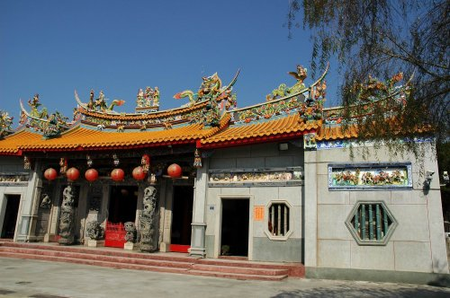
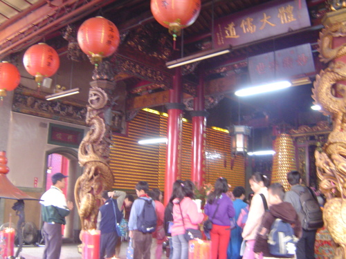

民國5年（1916）草創於日南，供奉關聖帝君，為埔里四大老廟之一。 列為三級古蹟（尚未申報）。民國36年奉天旨遷廟，民國40年於現址峻工。
廟址位於烏牛欄台地最東側，俯瞰愛蘭橋。 愛蘭橋前身為烏牛欄吊橋，地形為隘口，易守難攻。 「二二八事件」時，台灣最後一波抵抗勢力在此集結， 史稱「烏牛欄之役」，事件在此畫上休止符。
主祀三恩主公：關公、呂洞賓、灶神。 出入廟宇，由青龍方入（面向廟門右側），白虎方出。
📖 漢學學堂
早期為漢學學堂，亦為民間求藥之處。現今仍維持農曆每月三日、十三日、廿三日可前往求藥。
🏮 神燈
入山門前，二側神燈為日據時代上虎頭山頂神社山路二旁之神燈。
🪨 石獅
石獅為大埔城衙門之石獅，日據時地震後移至虎頭山神社，神社毀圮後移至此。
🌳 榕樹 & 香楠
廟前有榕樹，氣根發達，頂天立地。廟西側有台地最大的一株香楠。
醒靈寺不僅是信仰中心，更承載了埔里烏牛欄地區的歷史轉折與族群記憶， 從日治、二二八到當代，始終是地方心靈與文化的燈塔。